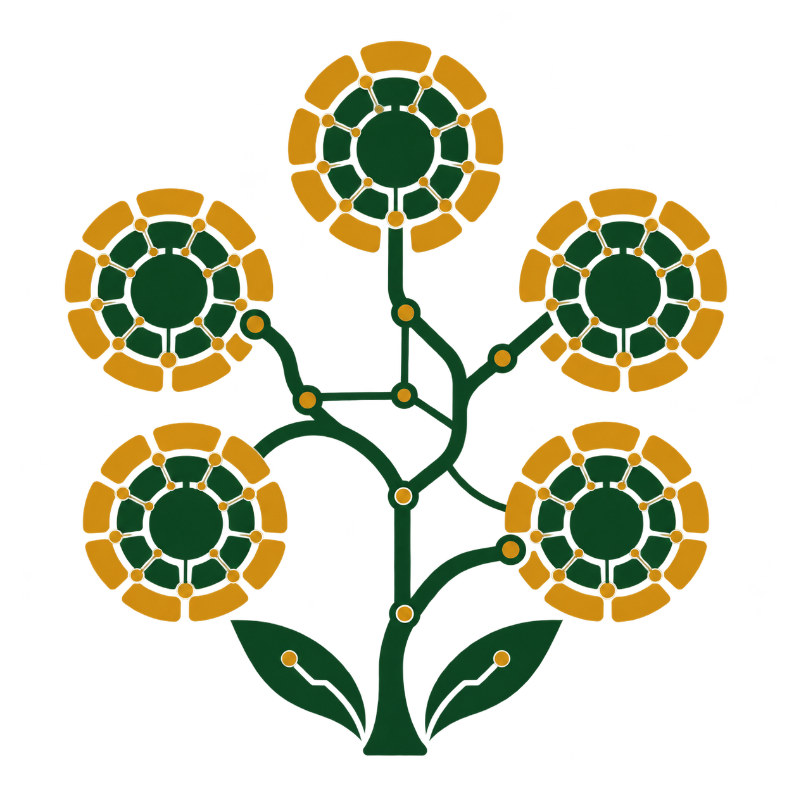
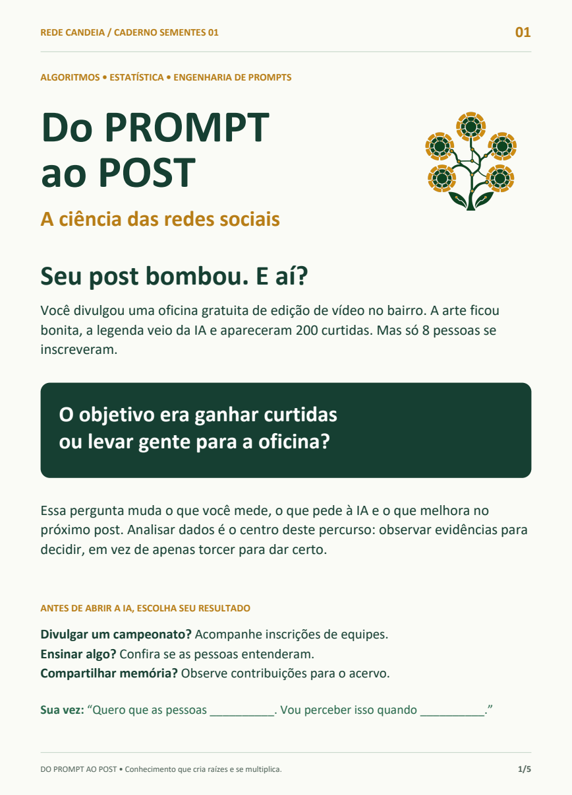

Potência compartilhada
A proposta combina servidores e ferramentas de IA com acesso por dispositivos simples, em núcleos que podem ocupar centros culturais, CRJs e instituições locais.

e-CandeIAUma iniciativa da Rede CandeIATECNOLOGIA COM RAÍZES NO TERRITÓRIO
IA e ciência de dados para entender o mundo, criar soluções e compartilhar o que a gente aprende.
Comece pelo nosso ebookGratuito. Cinco páginas. Uma nova forma de olhar para as redes.
Uma ideia se conecta a outra.
O conhecimento se multiplica.

CADERNO seMENTES 01 PDF · 5 páginas · 1,3 MB
NOSSO PRIMEIRO CADERNO FORMATIVO
A ciência das redes sociais
Seu post teve 200 curtidas. Mas ele fez acontecer o que você queria? Aprenda a ler os dados antes de pedir à IA a próxima ideia.
Acesso gratuito, sem cadastro. Com exercícios, dados fictícios e um desafio para fazer no seu território.
A REDE CANDEIA
Na periferia, o computador de uma casa podia fazer o convite do vizinho, a planilha da festa da igreja e o trabalho da escola. Antes, um carro também podia servir a toda uma rede de pessoas.
A CandeIA parte dessa memória de compartilhamento para propor núcleos comunitários de inteligência artificial e ciência de dados. A e-CandeIA é a presença digital dessa ideia: um lugar para fazer o conhecimento circular, começando pelos nossos materiais formativos.
A proposta combina servidores e ferramentas de IA com acesso por dispositivos simples, em núcleos que podem ocupar centros culturais, CRJs e instituições locais.
No percurso seMENTES, jovens investigam, criam projetos e avançam para compartilhar conhecimentos e formar outras pessoas.
Memória do bairro, dados comunitários e soluções locais orientam a produção de tecnologia. As comunidades participam das decisões sobre prioridades e usos.
A rede de núcleos é uma proposta em desenvolvimento. O primeiro ebook já está disponível para leitura e uso nas atividades formativas.
Acendeu uma ideia?
Faça ela circular.